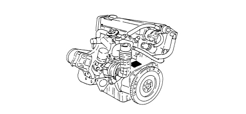

POSITION OF ENGINE MARKING
- Path
- Technical Data > VEHICLE INTRODUCTION > IDENTIFICATION PLATES > POSITION OF ENGINE MARKING
- Kind
- technical data / specifications
- Applies to
- all engines; all production periods
- Interactive page
- https://sloeber94.github.io/elrnDB-aBrrSpdr/en/#/946001259
Applies to: all engines; all production periods
2.2 JTS Engine
The engine marking is stamped on the flat part of the engine oil filter case.

3.2 JTS Engine
The engine marking is stamped on the crankcase, gearbox side, near the starter motor.
2.4 JTD 20v Engine
The engine marking is stamped on the engine block, gearbox side.
